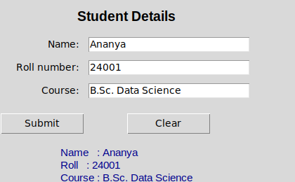
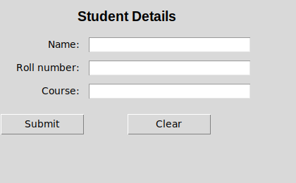
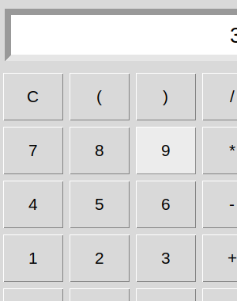
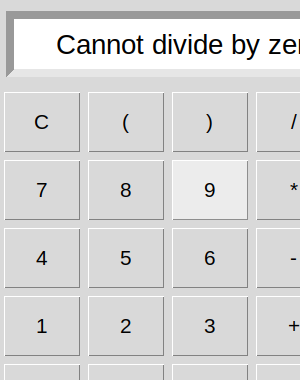

18 experiments, each set out as 1. Question, 2. Aim, 3. Steps, 4. Programme, 5. Execution and Results.
All programs are in
labs/course-3-python/. All eighteen were run under Python 3.11 for this page, and what each
printed is shown under 5. Execution and Results. The two Tkinter programs need a display:
they were run under a virtual one, by a driver beside each (_drive_17_tkinter_input.py,
_drive_18_tkinter_calculator.py) that types into the window, presses its buttons and checks
what it shows, and the window is shown as it looked.
bash tools/data-science/run_python_labs.sh # re-run everything
python3 labs/course-3-python/05_list_operations.py| # | Experiment | File | Unit |
|---|---|---|---|
| 1a | Basic details and literal types | 01a_basic_details.py |
1 |
| 1b | All operator categories | 01b_operators.py |
1 |
| 2a | Largest of three (if-elif-else) |
02a_largest_of_three.py |
2 |
| 2b | Prime check using loops | 02b_prime_check.py |
2 |
| 2c | break, continue, pass |
02c_loop_control.py |
2 |
| 3a | Factorial by recursion | 03a_factorial_recursion.py |
2 |
| 3b | Function argument types | 03b_function_arguments.py |
2 |
| 4 | String slicing and methods | 04_string_operations.py |
3 |
| 5 | List operations and comprehension | 05_list_operations.py |
3 |
| 6 | Tuple packing and immutability | 06_tuple_operations.py |
3 |
| 7 | Set operations | 07_set_operations.py |
3 |
| 8 | Dictionary operations | 08_dictionary_operations.py |
3 |
| 9 | Count vowels, consonants, digits, spaces | 09_count_file_characters.py |
4 |
| 10 | Copy one file to another | 10_copy_file.py |
4 |
| 11 | Process marks from a CSV | 11_csv_marks.py |
4 |
| 12 | try-except-finally |
12_exception_handling.py |
4 |
| 13 | Student class | 13_student_class.py |
4 |
| 14 | Single and multilevel inheritance | 14_inheritance.py |
4 |
| 15 | Stack and queue, list and linked | 15_stack_queue.py |
5 |
| 16 | Singly linked list | 16_linked_list.py |
5 |
| 17 | Tkinter — Label, Entry, Button | 17_tkinter_input.py |
5 |
| 18 | Tkinter — calculator | 18_tkinter_calculator.py |
5 |
Unit 1. Display basic details using print() and demonstrate the different literal types: int, float, string, boolean, complex.
Print a student's details, and name the type of each kind of literal.
type(value).__name__ gives the type's name."""Experiment 1(a): Display basic details using print() and demonstrate the
different literal types (int, float, string, boolean, complex).
Syllabus: Course 3, Unit 1 -- literals, variables, built-in data types.
"""
# Step 1: Assign one literal of each type
name = "Raghav" # str literal
roll_number = 24001 # int literal
department = "Data Science"
cgpa = 8.75 # float literal
is_enrolled = True # bool literal
impedance = 3 + 4j # complex literal
# Step 2: Print the details
print("STUDENT DETAILS")
print("-" * 40)
print(f"Name : {name}")
print(f"Roll number: {roll_number}")
print(f"Department : {department}")
print(f"CGPA : {cgpa}")
print(f"Enrolled : {is_enrolled}")
# Step 3: Name the type of each value
print("\nLITERAL TYPES")
print("-" * 40)
for value in (roll_number, cgpa, name, is_enrolled, impedance):
print(f"{str(value):<20} -> {type(value).__name__}")
# Step 4: The two parts of a complex number
# A complex number carries .real and .imag attributes.
print(f"\nreal part of {impedance} = {impedance.real}")
print(f"imag part of {impedance} = {impedance.imag}")OUTPUT
STUDENT DETAILS
----------------------------------------
Name : Raghav
Roll number: 24001
Department : Data Science
CGPA : 8.75
Enrolled : True
LITERAL TYPES
----------------------------------------
24001 -> int
8.75 -> float
Raghav -> str
True -> bool
(3+4j) -> complex
real part of (3+4j) = 3.0
imag part of (3+4j) = 4.0
RESULT
The details print as labelled lines, and the five literals are an int, a float, a str, a bool and a complex, whose real and imaginary parts are 3.0 and 4.0.
Unit 1. Perform arithmetic, relational, logical, bitwise and assignment operations on two integers given as input (here 12 and 5).
Show what each operator gives on the same two numbers.
input() returns text, so each is converted with int()."""Experiment 1(b): Perform arithmetic, relational, logical, bitwise and
assignment operations on given inputs.
Syllabus: Course 3, Unit 1 -- classification of operators.
Sample input: 12 5
"""
# Step 1: Read two integers
a = int(input("Enter the first integer : "))
b = int(input("Enter the second integer: "))
# Step 2: Arithmetic
print(f"\nARITHMETIC (a = {a}, b = {b})")
print(f" a + b = {a + b}")
print(f" a - b = {a - b}")
print(f" a * b = {a * b}")
print(f" a / b = {a / b} <- true division, always a float")
print(f" a // b = {a // b} <- floor division")
print(f" a % b = {a % b}")
print(f" a ** b = {a ** b}")
# Step 3: Relational
print("\nRELATIONAL")
for symbol, result in (("==", a == b), ("!=", a != b), (">", a > b),
("<", a < b), (">=", a >= b), ("<=", a <= b)):
print(f" a {symbol:<2} b = {result}")
# Step 4: Logical
print("\nLOGICAL")
print(f" (a > 0) and (b > 0) = {(a > 0) and (b > 0)}")
print(f" (a > 0) or (b < 0) = {(a > 0) or (b < 0)}")
print(f" not (a > b) = {not (a > b)}")
# Step 5: Bitwise
print("\nBITWISE")
print(f" a = {a} = {a:b} in binary, b = {b} = {b:b} in binary")
print(f" a & b = {a & b}")
print(f" a | b = {a | b}")
print(f" a ^ b = {a ^ b}")
print(f" ~a = {~a}")
print(f" a << 1 = {a << 1}")
print(f" a >> 1 = {a >> 1}")
# Step 6: Augmented assignment
print("\nASSIGNMENT (augmented)")
x = a
x += b; print(f" x += b -> {x}")
x -= b; print(f" x -= b -> {x}")
x *= b; print(f" x *= b -> {x}")
x //= b; print(f" x //= b -> {x}")
# Step 7: Identity and membership
print("\nIDENTITY and MEMBERSHIP")
print(f" a is b = {a is b}")
print(f" a in [a, b] = {a in [a, b]}")OUTPUT
Enter the first integer : 12
Enter the second integer: 5
ARITHMETIC (a = 12, b = 5)
a + b = 17
a - b = 7
a * b = 60
a / b = 2.4 <- true division, always a float
a // b = 2 <- floor division
a % b = 2
a ** b = 248832
RELATIONAL
a == b = False
a != b = True
a > b = True
a < b = False
a >= b = True
a <= b = False
LOGICAL
(a > 0) and (b > 0) = True
(a > 0) or (b < 0) = True
not (a > b) = False
BITWISE
a = 12 = 1100 in binary, b = 5 = 101 in binary
a & b = 4
a | b = 13
a ^ b = 9
~a = -13
a << 1 = 24
a >> 1 = 6
ASSIGNMENT (augmented)
x += b -> 17
x -= b -> 12
x *= b -> 60
x //= b -> 12
IDENTITY and MEMBERSHIP
a is b = False
a in [a, b] = True
RESULT
On 12 and 5: / gives 2.4, always a float, while // gives 2 and % 2; 12 & 5 is 4, 12 | 5 13 and ~12 −13; a is b is False and a in [a, b] True.
Unit 2. Find the largest of three numbers using if-elif-else (here 45, 78 and 23).
Choose the largest of three numbers by comparison.
max() is the cross-check — correct, but the exam wants the if-elif-else version."""Experiment 2(a): Find the largest of three numbers using if-elif-else.
Syllabus: Course 3, Unit 2 -- control flow.
Sample input: 45 78 23
"""
# Step 1: Read three numbers
a = float(input("Enter the first number : "))
b = float(input("Enter the second number: "))
c = float(input("Enter the third number : "))
# Step 2: Compare them with if-elif-else
if a >= b and a >= c:
largest = a
elif b >= a and b >= c:
largest = b
else:
largest = c
# Step 3: Print the largest, and check it with max()
print(f"The largest of {a}, {b}, {c} is {largest}")
# Built-in alternative -- correct, but the exam wants the if-elif-else version.
print(f"Cross-check with max(): {max(a, b, c)}")OUTPUT
Enter the first number : 45
Enter the second number: 78
Enter the third number : 23
The largest of 45.0, 78.0, 23.0 is 78.0
Cross-check with max(): 78.0
RESULT
The largest of 45, 78 and 23 is 78, and max() agrees.
Unit 2. Check whether a number is prime using loops (here 29).
Decide whether n is prime, testing as few divisors as possible.
break leaves the loop at the first divisor found.THE METHOD
Test divisors only up to √n. If n had a factor larger than its square root, the
matching co-factor would be smaller than the square root and you would have
found it already. Write the loop as while divisor * divisor <= n rather than
computing a square root — it avoids floating-point comparison entirely.
Remember that 0, 1 and negative numbers are not prime, and 2 is the only even prime.
"""Experiment 2(b): Check whether a number is prime using loops.
Only test divisors up to sqrt(n): if n has a factor larger than its square
root, the matching co-factor is smaller than the square root and would have
been found already.
Syllabus: Course 3, Unit 2 -- iterative statements.
Sample input: 29
"""
# Step 1: Read n
n = int(input("Enter a number: "))
# Step 2: A number below 2 is not prime
if n < 2:
print(f"{n} is not a prime number (primes start at 2)")
else:
is_prime = True
divisor = 2
# Step 3: Try each divisor up to the square root
while divisor * divisor <= n:
if n % divisor == 0:
is_prime = False
print(f"{n} is divisible by {divisor}")
break
divisor += 1
# Step 4: Report the result
print(f"{n} is {'a prime' if is_prime else 'not a prime'} number")OUTPUT
Enter a number: 29
29 is a prime number
RESULT
29 has no divisor from 2 to 5, so it is prime.
Unit 2. Illustrate the loop control statements break, continue and pass.
Show what each of the three statements does to the same loop.
else runs only when the loop was not broken out of."""Experiment 2(c): Illustrate the loop control statements break, continue
and pass.
break -- leave the loop immediately
continue -- skip the rest of this iteration, go to the next
pass -- do nothing; a syntactic placeholder where a statement is required
Syllabus: Course 3, Unit 2 -- loop control statements.
"""
# Step 1: break
print("break -- stop as soon as we reach 5")
for i in range(1, 11):
if i == 5:
break
print(f" {i}", end="")
print("\n")
# Step 2: continue
print("continue -- skip the even numbers")
for i in range(1, 11):
if i % 2 == 0:
continue
print(f" {i}", end="")
print("\n")
# Step 3: pass
print("pass -- placeholder, the loop body does nothing for multiples of 3")
for i in range(1, 11):
if i % 3 == 0:
pass # a branch we have not written yet; keeps the code valid
else:
print(f" {i}", end="")
print("\n")
# Step 4: else on a loop
print("else with a loop -- runs only when the loop was NOT broken out of")
for i in range(1, 4):
print(f" iteration {i}")
else:
print(" loop finished without a break")OUTPUT
break -- stop as soon as we reach 5
1 2 3 4
continue -- skip the even numbers
1 3 5 7 9
pass -- placeholder, the loop body does nothing for multiples of 3
1 2 4 5 7 8 10
else with a loop -- runs only when the loop was NOT broken out of
iteration 1
iteration 2
iteration 3
loop finished without a break
RESULT
break stops the count at 4; continue skips the even numbers; pass does nothing, so the multiples of 3 are simply not printed; and the loop's else runs because nothing broke out of it.
Unit 2. Calculate the factorial of a number using recursion (here 6).
Compute n! recursively, and trace the calls.
"""Experiment 3(a): Calculate the factorial of a number using recursion.
Syllabus: Course 3, Unit 2 -- recursive functions.
Sample input: 6
"""
# Step 1: The recursive function: a base case and a recursive case
def factorial(n):
"""Return n! computed recursively."""
if n < 0:
raise ValueError("factorial is undefined for negative numbers")
if n in (0, 1): # BASE CASE -- stops the recursion
return 1
return n * factorial(n - 1) # RECURSIVE CASE
# Step 2: The same function, printing each call
def factorial_traced(n, depth=0):
"""Same function, printing the call stack so you can trace it in a viva."""
indent = " " * depth
print(f"{indent}factorial({n}) called")
if n in (0, 1):
print(f"{indent} base case -> 1")
return 1
result = n * factorial_traced(n - 1, depth + 1)
print(f"{indent} returns {n} * factorial({n - 1}) = {result}")
return result
if __name__ == "__main__":
# Step 3: Read n, and print n! and the call trace
number = int(input("Enter a non-negative integer: "))
print(f"\n{number}! = {factorial(number)}\n")
print("Call trace:")
factorial_traced(number)OUTPUT
Enter a non-negative integer: 6
6! = 720
Call trace:
factorial(6) called
factorial(5) called
factorial(4) called
factorial(3) called
factorial(2) called
factorial(1) called
base case -> 1
returns 2 * factorial(1) = 2
returns 3 * factorial(2) = 6
returns 4 * factorial(3) = 24
returns 5 * factorial(4) = 120
returns 6 * factorial(5) = 720
RESULT
6! = 720. The trace shows six calls going down to the base case and six returns coming back up.
Unit 2. Demonstrate the different types of function arguments: default, positional, keyword and variable-length.
Call functions with every kind of argument, and see what each receives.
THE METHOD
Demonstrate all five: required, default, keyword, *args and **kwargs. Show
that *args arrives as a tuple and **kwargs as a dict — printing
type() for each makes the point clearly.
"""Experiment 3(b): Demonstrate the different types of function arguments --
default, positional, keyword and variable-length.
Syllabus: Course 3, Unit 2 -- function arguments.
"""
# Step 1: Required and default parameters
def student(name, course, year=1):
"""`name` and `course` are required; `year` has a default value."""
return f"{name} studies {course}, year {year}"
# Step 2: Variable-length *args and **kwargs
def total(*numbers):
"""*args -- variable number of positional arguments, received as a tuple."""
print(f" received {len(numbers)} arguments as a tuple: {numbers}")
return sum(numbers)
def profile(**details):
"""**kwargs -- variable keyword arguments, received as a dictionary."""
print(f" received a dict: {details}")
return ", ".join(f"{k}={v}" for k, v in details.items())
# Step 3: All four kinds in their required order
def mixed(required, default="D", *args, **kwargs):
"""The mandatory ordering: required, default, *args, **kwargs."""
return f"required={required}, default={default}, args={args}, kwargs={kwargs}"
# Step 4: Call with positional, keyword and default arguments
print("POSITIONAL arguments -- matched by position")
print(" ", student("Ananya", "Data Science"))
print("\nKEYWORD arguments -- matched by name, so order stops mattering")
print(" ", student(course="Statistics", name="Bhavana", year=2))
print("\nDEFAULT argument -- year falls back to 1 when omitted")
print(" ", student("Charan", "Python"))
# Step 5: Call with variable-length arguments
print("\nVARIABLE-LENGTH *args")
print(f" total(1, 2, 3, 4, 5) = {total(1, 2, 3, 4, 5)}")
print("\nVARIABLE-LENGTH **kwargs")
print(f" {profile(name='Divya', roll=24003, cgpa=9.1)}")
print("\nALL FOUR TOGETHER")
print(" ", mixed("R", "X", 1, 2, extra="yes"))OUTPUT
POSITIONAL arguments -- matched by position
Ananya studies Data Science, year 1
KEYWORD arguments -- matched by name, so order stops mattering
Bhavana studies Statistics, year 2
DEFAULT argument -- year falls back to 1 when omitted
Charan studies Python, year 1
VARIABLE-LENGTH *args
received 5 arguments as a tuple: (1, 2, 3, 4, 5)
total(1, 2, 3, 4, 5) = 15
VARIABLE-LENGTH **kwargs
received a dict: {'name': 'Divya', 'roll': 24003, 'cgpa': 9.1}
name=Divya, roll=24003, cgpa=9.1
ALL FOUR TOGETHER
required=R, default=X, args=(1, 2), kwargs={'extra': 'yes'}
RESULT
Positional arguments match by position and keyword ones by name; year falls back to 1; *args arrives as the tuple (1, 2, 3, 4, 5) and **kwargs as a dict.
Unit 3. Illustrate string slicing, concatenation, repetition and the built-in string methods.
Take a string apart by index and slice, and transform it with its methods.
text[start:stop:step]; the stop is excluded."""Experiment 4: Illustrate string slicing, concatenation, repetition and the
built-in string methods.
Syllabus: Course 3, Unit 3 -- strings.
"""
# Step 1: The string
text = "Data Science Major"
print(f"text = {text!r} (length {len(text)})")
# Step 2: Indexing
print("\nINDEXING")
print(f" text[0] = {text[0]!r} first character")
print(f" text[-1] = {text[-1]!r} last character")
# Step 3: Slicing
print("\nSLICING text[start:stop:step] -- stop is excluded")
print(f" text[0:4] = {text[0:4]!r}")
print(f" text[5:12] = {text[5:12]!r}")
print(f" text[:4] = {text[:4]!r} start defaults to 0")
print(f" text[13:] = {text[13:]!r} stop defaults to the end")
print(f" text[::2] = {text[::2]!r} every second character")
print(f" text[::-1] = {text[::-1]!r} reversed")
# Step 4: Concatenation and repetition
print("\nCONCATENATION and REPETITION")
print(f" 'Data' + ' ' + 'Science' = {'Data' + ' ' + 'Science'!r}")
print(f" '-' * 20 = {'-' * 20!r}")
# Step 5: The string methods
print("\nMETHODS")
for call, result in (
("upper()", text.upper()),
("lower()", text.lower()),
("title()", text.title()),
("split()", text.split()),
("replace()", text.replace("Major", "Minor")),
("find('Science')", text.find("Science")),
("count('a')", text.count("a")),
("startswith('Data')", text.startswith("Data")),
("strip()", " padded ".strip()),
("join()", "-".join(["a", "b", "c"])),
):
print(f" {call:<20} -> {result!r}")
# Step 6: Immutability
print("\nIMMUTABILITY -- strings cannot be changed in place")
try:
text[0] = "X"
except TypeError as exc:
print(f" text[0] = 'X' raises TypeError: {exc}")
print(" build a new string instead:", "X" + text[1:])
# Step 7: Traversal
print("\nTRAVERSAL and ACCUMULATION")
vowels = "".join(ch for ch in text if ch.lower() in "aeiou")
print(f" vowels in text: {vowels!r}")OUTPUT
text = 'Data Science Major' (length 18)
INDEXING
text[0] = 'D' first character
text[-1] = 'r' last character
SLICING text[start:stop:step] -- stop is excluded
text[0:4] = 'Data'
text[5:12] = 'Science'
text[:4] = 'Data' start defaults to 0
text[13:] = 'Major' stop defaults to the end
text[::2] = 'Dt cec ao' every second character
text[::-1] = 'rojaM ecneicS ataD' reversed
CONCATENATION and REPETITION
'Data' + ' ' + 'Science' = 'Data Science'
'-' * 20 = '--------------------'
METHODS
upper() -> 'DATA SCIENCE MAJOR'
lower() -> 'data science major'
title() -> 'Data Science Major'
split() -> ['Data', 'Science', 'Major']
replace() -> 'Data Science Minor'
find('Science') -> 5
count('a') -> 3
startswith('Data') -> True
strip() -> 'padded'
join() -> 'a-b-c'
IMMUTABILITY -- strings cannot be changed in place
text[0] = 'X' raises TypeError: 'str' object does not support item assignment
build a new string instead: Xata Science Major
TRAVERSAL and ACCUMULATION
vowels in text: 'aaieeao'
RESULT
text[5:12] is 'Science' and text[::-1] the string reversed; the methods return new strings, and assigning to text[0] raises a TypeError, because strings are immutable.
Unit 3. Create a list of numbers and perform insertion, deletion, searching, sorting and list comprehension.
Change a list in each of the ways a list can be changed.
sorted() returns a new list; .sort() sorts in place."""Experiment 5: Create a list of numbers and perform insertion, deletion,
searching, sorting and list comprehension.
Syllabus: Course 3, Unit 3 -- lists.
"""
# Step 1: The list
numbers = [45, 12, 78, 3, 56, 23]
print(f"original list: {numbers}")
# Step 2: Insertion
print("\nINSERTION")
numbers.append(99)
print(f" append(99) -> {numbers}")
numbers.insert(2, 50)
print(f" insert(2, 50) -> {numbers}")
numbers.extend([7, 8])
print(f" extend([7, 8]) -> {numbers}")
# Step 3: Deletion
print("\nDELETION")
numbers.remove(3)
print(f" remove(3) -> {numbers} removes the first matching value")
popped = numbers.pop()
print(f" pop() -> {numbers} returned {popped}")
del numbers[0]
print(f" del numbers[0] -> {numbers}")
# Step 4: Searching
print("\nSEARCHING")
print(f" 56 in numbers = {56 in numbers}")
print(f" numbers.index(56) = {numbers.index(56)}")
print(f" numbers.count(12) = {numbers.count(12)}")
# Step 5: Sorting
print("\nSORTING")
print(f" sorted(numbers) = {sorted(numbers)} returns a new list")
print(f" sorted(numbers, reverse=True) = {sorted(numbers, reverse=True)}")
numbers.sort()
print(f" numbers.sort() -> {numbers} sorts in place")
# Step 6: List comprehension
print("\nLIST COMPREHENSION")
print(f" squares = {[n ** 2 for n in numbers]}")
print(f" evens only = {[n for n in numbers if n % 2 == 0]}")
print(f" labelled = {['even' if n % 2 == 0 else 'odd' for n in numbers]}")
matrix = [[row * col for col in range(1, 4)] for row in range(1, 4)]
print(f" nested (3x3) = {matrix}")
# Step 7: Mutability: an alias and a copy
print("\nMUTABILITY -- lists are mutable, unlike strings and tuples")
alias = numbers # same object
copy = numbers.copy() # independent object
numbers[0] = 999
print(f" after numbers[0] = 999:")
print(f" alias = {alias} <- changed too, it is the same list")
print(f" copy = {copy} <- unchanged, it is a separate list")OUTPUT
original list: [45, 12, 78, 3, 56, 23]
INSERTION
append(99) -> [45, 12, 78, 3, 56, 23, 99]
insert(2, 50) -> [45, 12, 50, 78, 3, 56, 23, 99]
extend([7, 8]) -> [45, 12, 50, 78, 3, 56, 23, 99, 7, 8]
DELETION
remove(3) -> [45, 12, 50, 78, 56, 23, 99, 7, 8] removes the first matching value
pop() -> [45, 12, 50, 78, 56, 23, 99, 7] returned 8
del numbers[0] -> [12, 50, 78, 56, 23, 99, 7]
SEARCHING
56 in numbers = True
numbers.index(56) = 3
numbers.count(12) = 1
SORTING
sorted(numbers) = [7, 12, 23, 50, 56, 78, 99] returns a new list
sorted(numbers, reverse=True) = [99, 78, 56, 50, 23, 12, 7]
numbers.sort() -> [7, 12, 23, 50, 56, 78, 99] sorts in place
LIST COMPREHENSION
squares = [49, 144, 529, 2500, 3136, 6084, 9801]
evens only = [12, 50, 56, 78]
labelled = ['odd', 'even', 'odd', 'even', 'even', 'even', 'odd']
nested (3x3) = [[1, 2, 3], [2, 4, 6], [3, 6, 9]]
MUTABILITY -- lists are mutable, unlike strings and tuples
after numbers[0] = 999:
alias = [999, 12, 23, 50, 56, 78, 99] <- changed too, it is the same list
copy = [7, 12, 23, 50, 56, 78, 99] <- unchanged, it is a separate list
RESULT
Every operation changes the list in place; sorted() leaves it alone. After numbers[0] = 999 the alias has changed too, because it is the same list, and the copy has not.
Unit 3. Demonstrate tuple packing, unpacking and immutability.
Show what tuples are for, and that they cannot be changed.
"""Experiment 6: Demonstrate tuple packing, unpacking and immutability.
Syllabus: Course 3, Unit 3 -- tuples.
"""
# Step 1: Packing
print("PACKING -- several values collected into one tuple")
student = "Ananya", 24001, 8.75
print(f" student = {student} type {type(student).__name__}")
# Step 2: Unpacking
print("\nUNPACKING -- one tuple spread across several variables")
name, roll, cgpa = student
print(f" name = {name}, roll = {roll}, cgpa = {cgpa}")
# Step 3: Extended unpacking
print("\nEXTENDED UNPACKING with *")
first, *rest = (10, 20, 30, 40)
print(f" first = {first}, rest = {rest} (rest is a list)")
# Step 4: Swapping by tuple assignment
print("\nSWAPPING via tuple assignment -- no temporary variable needed")
a, b = 5, 9
print(f" before: a = {a}, b = {b}")
a, b = b, a
print(f" after : a = {a}, b = {b}")
# Step 5: Operations
print("\nOPERATIONS")
t = (1, 2, 3, 2, 5)
print(f" t = {t}")
print(f" len(t) = {len(t)}")
print(f" t + (6, 7) = {t + (6, 7)}")
print(f" t * 2 = {t * 2}")
print(f" t[1:4] = {t[1:4]}")
print(f" t.count(2) = {t.count(2)}")
print(f" t.index(3) = {t.index(3)}")
print(f" max(t) = {max(t)}, min(t) = {min(t)}, sum(t) = {sum(t)}")
# Step 6: Immutability
print("\nIMMUTABILITY")
try:
t[0] = 99
except TypeError as exc:
print(f" t[0] = 99 raises TypeError: {exc}")
# Step 7: The single-element tuple
print("\nSINGLE-ELEMENT TUPLE -- the trailing comma is what makes it a tuple")
not_a_tuple = (5)
actual_tuple = (5,)
print(f" (5) -> {type(not_a_tuple).__name__}")
print(f" (5,) -> {type(actual_tuple).__name__}")
# Step 8: Tuples as dictionary keys
print("\nWHY TUPLES: being immutable, they can be dictionary keys")
locations = {(17.68, 83.21): "Visakhapatnam", (16.99, 82.24): "Kakinada"}
print(f" {locations}")OUTPUT
PACKING -- several values collected into one tuple
student = ('Ananya', 24001, 8.75) type tuple
UNPACKING -- one tuple spread across several variables
name = Ananya, roll = 24001, cgpa = 8.75
EXTENDED UNPACKING with *
first = 10, rest = [20, 30, 40] (rest is a list)
SWAPPING via tuple assignment -- no temporary variable needed
before: a = 5, b = 9
after : a = 9, b = 5
OPERATIONS
t = (1, 2, 3, 2, 5)
len(t) = 5
t + (6, 7) = (1, 2, 3, 2, 5, 6, 7)
t * 2 = (1, 2, 3, 2, 5, 1, 2, 3, 2, 5)
t[1:4] = (2, 3, 2)
t.count(2) = 2
t.index(3) = 2
max(t) = 5, min(t) = 1, sum(t) = 13
IMMUTABILITY
t[0] = 99 raises TypeError: 'tuple' object does not support item assignment
SINGLE-ELEMENT TUPLE -- the trailing comma is what makes it a tuple
(5) -> int
(5,) -> tuple
WHY TUPLES: being immutable, they can be dictionary keys
{(17.68, 83.21): 'Visakhapatnam', (16.99, 82.24): 'Kakinada'}
RESULT
a, b = b, a swaps without a temporary variable; t[0] = 99 raises a TypeError; (5) is an int and (5,) a tuple; and a tuple of coordinates can be a dictionary key.
Unit 3. Implement the set operations: union, intersection, difference, subset and superset.
Combine and compare two sets.
"""Experiment 7: Implement the set operations -- union, intersection,
difference, subset and superset.
Syllabus: Course 3, Unit 3 -- sets.
"""
# Step 1: Two sets
A = {1, 2, 3, 4, 5}
B = {4, 5, 6, 7, 8}
print(f"A = {A}")
print(f"B = {B}")
# Step 2: Union, intersection and difference
print("\nMATHEMATICAL OPERATIONS (operator and method forms are equivalent)")
print(f" union A | B = {A | B}")
print(f" A.union(B) = {A.union(B)}")
print(f" intersection A & B = {A & B}")
print(f" difference A - B = {A - B} in A but not in B")
print(f" B - A = {B - A} in B but not in A")
print(f" symmetric diff A ^ B = {A ^ B} in one or the other, not both")
# Step 3: Subset and superset
print("\nSUBSET and SUPERSET")
C = {1, 2, 3}
print(f" C = {C}")
print(f" C.issubset(A) = {C.issubset(A)} C <= A is {C <= A}")
print(f" A.issuperset(C) = {A.issuperset(C)} A >= C is {A >= C}")
print(f" A.isdisjoint(B) = {A.isdisjoint(B)} they share 4 and 5")
# Step 4: Modifying a set
print("\nMODIFYING A SET")
S = {10, 20}
S.add(30); print(f" add(30) -> {S}")
S.update([40, 50]); print(f" update([40,50]) -> {S}")
S.discard(99); print(f" discard(99) -> {S} missing value is ignored")
S.remove(10); print(f" remove(10) -> {S}")
try:
S.remove(99)
except KeyError:
print(" remove(99) raises KeyError -- unlike discard()")
# Step 5: Duplicates are dropped
print("\nDUPLICATES ARE DROPPED AUTOMATICALLY")
print(f" set([1, 1, 2, 2, 3]) = {set([1, 1, 2, 2, 3])}")
# Step 6: Frozenset
print("\nFROZENSET -- the immutable version")
fs = frozenset([1, 2, 3])
print(f" {fs}")
try:
fs.add(4)
except AttributeError as exc:
print(f" fs.add(4) raises AttributeError: {exc}")
# Step 7: Set comprehension
print("\nSET COMPREHENSION")
print(f" {{n ** 2 for n in range(1, 6)}} = {{{', '.join(str(n**2) for n in range(1,6))}}}")OUTPUT
A = {1, 2, 3, 4, 5}
B = {4, 5, 6, 7, 8}
MATHEMATICAL OPERATIONS (operator and method forms are equivalent)
union A | B = {1, 2, 3, 4, 5, 6, 7, 8}
A.union(B) = {1, 2, 3, 4, 5, 6, 7, 8}
intersection A & B = {4, 5}
difference A - B = {1, 2, 3} in A but not in B
B - A = {8, 6, 7} in B but not in A
symmetric diff A ^ B = {1, 2, 3, 6, 7, 8} in one or the other, not both
SUBSET and SUPERSET
C = {1, 2, 3}
C.issubset(A) = True C <= A is True
A.issuperset(C) = True A >= C is True
A.isdisjoint(B) = False they share 4 and 5
MODIFYING A SET
add(30) -> {10, 20, 30}
update([40,50]) -> {40, 10, 50, 20, 30}
discard(99) -> {40, 10, 50, 20, 30} missing value is ignored
remove(10) -> {40, 50, 20, 30}
remove(99) raises KeyError -- unlike discard()
DUPLICATES ARE DROPPED AUTOMATICALLY
set([1, 1, 2, 2, 3]) = {1, 2, 3}
FROZENSET -- the immutable version
frozenset({1, 2, 3})
fs.add(4) raises AttributeError: 'frozenset' object has no attribute 'add'
SET COMPREHENSION
{n ** 2 for n in range(1, 6)} = {1, 4, 9, 16, 25}
RESULT
A ∪ B is {1, …, 8}, A ∩ B is {4, 5}, and A − B is {1, 2, 3}; {1, 2, 3} is a subset of A; discard() ignores a missing value where remove() raises a KeyError; and a frozenset has no add().
Unit 3. Create a dictionary of student roll numbers and marks, then add, update, delete and traverse it.
Keep a set of marks in a dictionary and work with them.
get() returns None (or a default) for a missing key; [] raises a KeyError."""Experiment 8: Create a dictionary of student roll numbers and marks, then
add, update, delete and traverse it.
Syllabus: Course 3, Unit 3 -- dictionaries.
"""
# Step 1: The dictionary
marks = {24001: 85, 24002: 72, 24003: 91, 24004: 64}
print(f"initial dictionary: {marks}")
# Step 2: Add
print("\nADD")
marks[24005] = 78
print(f" marks[24005] = 78 -> {marks}")
# Step 3: Update
print("\nUPDATE")
marks[24002] = 80
print(f" marks[24002] = 80 -> {marks}")
marks.update({24001: 88, 24006: 55})
print(f" update({{...}}) -> {marks}")
# Step 4: Delete
print("\nDELETE")
removed = marks.pop(24006)
print(f" pop(24006) -> {marks} returned {removed}")
del marks[24004]
print(f" del marks[24004] -> {marks}")
# Step 5: Access
print("\nACCESS")
print(f" marks[24003] = {marks[24003]}")
print(f" marks.get(24003) = {marks.get(24003)}")
print(f" marks.get(99999) = {marks.get(99999)} <- None, no exception")
print(f" marks.get(99999, 0) = {marks.get(99999, 0)} <- with a default")
try:
marks[99999]
except KeyError as exc:
print(f" marks[99999] raises KeyError: {exc}")
# Step 6: Traversal
print("\nTRAVERSAL")
print(" keys :", list(marks.keys()))
print(" values:", list(marks.values()))
print(" items :")
for roll, score in marks.items():
grade = "A" if score >= 85 else "B" if score >= 70 else "C"
print(f" roll {roll}: {score:3d} -> grade {grade}")
# Step 7: Aggregates
print("\nAGGREGATES")
scores = list(marks.values())
print(f" count = {len(scores)}")
print(f" total = {sum(scores)}")
print(f" average = {sum(scores) / len(scores):.2f}")
print(f" highest = {max(marks, key=marks.get)} with {max(scores)}")
print(f" lowest = {min(marks, key=marks.get)} with {min(scores)}")
# Step 8: Dictionary comprehension
print("\nDICTIONARY COMPREHENSION")
print(f" passed (>= 75): {dict((k, v) for k, v in marks.items() if v >= 75)}")OUTPUT
initial dictionary: {24001: 85, 24002: 72, 24003: 91, 24004: 64}
ADD
marks[24005] = 78 -> {24001: 85, 24002: 72, 24003: 91, 24004: 64, 24005: 78}
UPDATE
marks[24002] = 80 -> {24001: 85, 24002: 80, 24003: 91, 24004: 64, 24005: 78}
update({...}) -> {24001: 88, 24002: 80, 24003: 91, 24004: 64, 24005: 78, 24006: 55}
DELETE
pop(24006) -> {24001: 88, 24002: 80, 24003: 91, 24004: 64, 24005: 78} returned 55
del marks[24004] -> {24001: 88, 24002: 80, 24003: 91, 24005: 78}
ACCESS
marks[24003] = 91
marks.get(24003) = 91
marks.get(99999) = None <- None, no exception
marks.get(99999, 0) = 0 <- with a default
marks[99999] raises KeyError: 99999
TRAVERSAL
keys : [24001, 24002, 24003, 24005]
values: [88, 80, 91, 78]
items :
roll 24001: 88 -> grade A
roll 24002: 80 -> grade B
roll 24003: 91 -> grade A
roll 24005: 78 -> grade B
AGGREGATES
count = 4
total = 337
average = 84.25
highest = 24003 with 91
lowest = 24005 with 78
DICTIONARY COMPREHENSION
passed (>= 75): {24001: 88, 24002: 80, 24003: 91, 24005: 78}
RESULT
After the changes four students remain, with total 337 and average 84.25; roll 24003 has the highest mark (91) and 24005 the lowest (78).
Unit 4. Read a text file and display the count of vowels, consonants, digits and spaces.
Classify every character of a file.
"""Experiment 9: Read a text file and display the count of vowels, consonants,
digits and spaces.
Syllabus: Course 3, Unit 4 -- file handling.
Creates its own sample.txt so the program runs standalone.
"""
FILENAME = "sample.txt"
# Step 1: Write the sample file
with open(FILENAME, "w") as fh:
fh.write("Data Science Major 2025\n")
fh.write("Andhra Pradesh State Council of Higher Education\n")
vowels = consonants = digits = spaces = others = 0
# Step 2: Read it back
# `with` closes the file automatically, even if an exception is raised.
with open(FILENAME, "r") as fh:
text = fh.read()
# Step 3: Classify each character
for ch in text:
if ch.isalpha():
if ch.lower() in "aeiou":
vowels += 1
else:
consonants += 1
elif ch.isdigit():
digits += 1
elif ch == " ":
spaces += 1
elif ch != "\n":
others += 1
# Step 4: Print the counts
print(f"Contents of {FILENAME}:")
print(text)
print(f"Vowels : {vowels}")
print(f"Consonants : {consonants}")
print(f"Digits : {digits}")
print(f"Spaces : {spaces}")
print(f"Others : {others}")
print(f"Total characters (excluding newlines): "
f"{vowels + consonants + digits + spaces + others}")OUTPUT
Contents of sample.txt:
Data Science Major 2025
Andhra Pradesh State Council of Higher Education
Vowels : 24
Consonants : 34
Digits : 4
Spaces : 9
Others : 0
Total characters (excluding newlines): 71
RESULT
The two lines hold 24 vowels, 34 consonants, 4 digits and 9 spaces: 71 characters, not counting the newlines.
Unit 4. Copy the contents of one file into another file.
Copy a file line by line, and check the copy.
"""Experiment 10: Copy the contents of one file into another file.
Syllabus: Course 3, Unit 4 -- file handling.
"""
SOURCE = "source.txt"
TARGET = "target.txt"
# Step 1: Write the source file
with open(SOURCE, "w") as fh:
fh.write("Line 1: Python file handling\n")
fh.write("Line 2: reading and writing\n")
fh.write("Line 3: Data Science Major\n")
# Step 2: Copy it line by line
# Copy line by line so the program works on files too large to hold in memory.
lines_copied = 0
with open(SOURCE, "r") as src, open(TARGET, "w") as dst:
for line in src:
dst.write(line)
lines_copied += 1
print(f"Copied {lines_copied} lines from {SOURCE} to {TARGET}\n")
# Step 3: Print the copy
with open(TARGET, "r") as fh:
print(f"Contents of {TARGET}:")
print(fh.read())
# Step 4: Check that the two files match
# Verify the two files now match.
with open(SOURCE) as a, open(TARGET) as b:
print("Files are identical" if a.read() == b.read() else "Files DIFFER")OUTPUT
Copied 3 lines from source.txt to target.txt
Contents of target.txt:
Line 1: Python file handling
Line 2: reading and writing
Line 3: Data Science Major
Files are identical
RESULT
Three lines are copied, and the two files are identical.
Unit 4. Read and process student marks from a CSV file, calculating the average, highest and lowest.
Read a CSV file into records and summarise them.
THE METHOD
Use csv.DictReader, which keys each row by the header. Two things to
remember: pass newline="" when opening, and convert every value — CSV data is
always strings.
"""Experiment 11: Read and process student marks from a CSV file, calculating
the average, highest and lowest.
Syllabus: Course 3, Unit 4 -- CSV files.
Uses the standard-library csv module (no pandas needed).
"""
import csv
FILENAME = "marks.csv"
# Step 1: Write the CSV file
rows = [
["roll", "name", "maths", "statistics", "python"],
["24001", "Ananya", "85", "78", "92"],
["24002", "Bhavana", "72", "88", "65"],
["24003", "Charan", "91", "95", "89"],
["24004", "Divya", "64", "70", "75"],
["24005", "Eshwar", "78", "62", "81"],
]
with open(FILENAME, "w", newline="") as fh:
csv.writer(fh).writerows(rows)
# Step 2: Read it with DictReader, converting the marks
# DictReader gives each row as a dictionary keyed by the header row.
students = []
with open(FILENAME, "r", newline="") as fh:
for row in csv.DictReader(fh):
subjects = {k: int(v) for k, v in row.items()
if k not in ("roll", "name")}
total = sum(subjects.values())
students.append({
"roll": row["roll"],
"name": row["name"],
"subjects": subjects,
"total": total,
"average": total / len(subjects),
})
# Step 3: Print each student
print(f"{'Roll':<8}{'Name':<12}{'Maths':>7}{'Stats':>7}{'Python':>8}"
f"{'Total':>7}{'Avg':>8}")
print("-" * 57)
for s in students:
m, st, p = s["subjects"]["maths"], s["subjects"]["statistics"], s["subjects"]["python"]
print(f"{s['roll']:<8}{s['name']:<12}{m:>7}{st:>7}{p:>8}"
f"{s['total']:>7}{s['average']:>8.2f}")
# Step 4: The class summary
print("\nCLASS SUMMARY")
averages = [s["average"] for s in students]
print(f" Class average : {sum(averages) / len(averages):.2f}")
best = max(students, key=lambda s: s["total"])
worst = min(students, key=lambda s: s["total"])
print(f" Highest total : {best['name']} with {best['total']}")
print(f" Lowest total : {worst['name']} with {worst['total']}")
# Step 5: Subject by subject
print("\nPER-SUBJECT")
for subject in ("maths", "statistics", "python"):
scores = [s["subjects"][subject] for s in students]
print(f" {subject:<12} avg {sum(scores) / len(scores):6.2f} "
f"high {max(scores):3d} low {min(scores):3d}")OUTPUT
Roll Name Maths Stats Python Total Avg
---------------------------------------------------------
24001 Ananya 85 78 92 255 85.00
24002 Bhavana 72 88 65 225 75.00
24003 Charan 91 95 89 275 91.67
24004 Divya 64 70 75 209 69.67
24005 Eshwar 78 62 81 221 73.67
CLASS SUMMARY
Class average : 79.00
Highest total : Charan with 275
Lowest total : Divya with 209
PER-SUBJECT
maths avg 78.00 high 91 low 64
statistics avg 78.60 high 95 low 62
python avg 80.40 high 92 low 65
RESULT
The class average is 79.00; Charan has the highest total (275) and Divya the lowest (209).
Unit 4. Demonstrate exception handling using try-except-finally.
Catch each common exception, and raise one of your own.
else runs only when no exception was raised; finally always runs."""Experiment 12: Demonstrate exception handling using try-except-finally.
Syllabus: Course 3, Unit 4 -- error and exception handling.
"""
# Step 1: A user-defined exception
class InvalidMarkError(Exception):
"""User-defined exception -- raised when a mark falls outside 0-100."""
# Step 2: try, except, else and finally
def divide(a, b):
try:
result = a / b
except ZeroDivisionError:
print(f" ZeroDivisionError caught: cannot divide {a} by zero")
return None
else:
print(f" else block: {a} / {b} = {result}") # runs only if no error
return result
finally:
print(" finally block: always runs, error or not")
# Step 3: ZeroDivisionError
print("1. ZeroDivisionError")
divide(10, 2)
divide(10, 0)
# Step 4: ValueError
print("\n2. ValueError from a bad conversion")
for value in ("42", "abc"):
try:
print(f" int({value!r}) = {int(value)}")
except ValueError as exc:
print(f" ValueError caught: {exc}")
# Step 5: Several exception types
print("\n3. Catching several exception types")
for item in [[1, 2, 3], "hello", None]:
try:
print(f" {item!r} -> first element {item[0]!r}")
except TypeError as exc:
print(f" TypeError caught: {exc}")
except IndexError as exc:
print(f" IndexError caught: {exc}")
# Step 6: FileNotFoundError
print("\n4. FileNotFoundError")
try:
with open("does_not_exist.txt") as fh:
fh.read()
except FileNotFoundError as exc:
print(f" FileNotFoundError caught: {exc.strerror}")
# Step 7: raise
print("\n5. raise -- signalling an error yourself")
def validate(mark):
if not 0 <= mark <= 100:
raise InvalidMarkError(f"{mark} is outside the valid range 0-100")
return mark
for mark in (85, 150):
try:
print(f" validate({mark}) = {validate(mark)}")
except InvalidMarkError as exc:
print(f" InvalidMarkError caught: {exc}")
# Step 8: assert
print("\n6. assert -- a sanity check that raises AssertionError")
try:
scores = [80, 90]
assert len(scores) > 0, "scores must not be empty"
print(f" assertion passed, average = {sum(scores) / len(scores)}")
assert all(s <= 100 for s in scores + [120]), "every score must be <= 100"
except AssertionError as exc:
print(f" AssertionError caught: {exc}")OUTPUT
1. ZeroDivisionError
else block: 10 / 2 = 5.0
finally block: always runs, error or not
ZeroDivisionError caught: cannot divide 10 by zero
finally block: always runs, error or not
2. ValueError from a bad conversion
int('42') = 42
ValueError caught: invalid literal for int() with base 10: 'abc'
3. Catching several exception types
[1, 2, 3] -> first element 1
'hello' -> first element 'h'
TypeError caught: 'NoneType' object is not subscriptable
4. FileNotFoundError
FileNotFoundError caught: No such file or directory
5. raise -- signalling an error yourself
validate(85) = 85
InvalidMarkError caught: 150 is outside the valid range 0-100
6. assert -- a sanity check that raises AssertionError
assertion passed, average = 85.0
AssertionError caught: every score must be <= 100
RESULT
Each error is caught and reported instead of stopping the program; finally runs both times; and the user-defined InvalidMarkError rejects a mark of 150.
Unit 4. Create a class Student with attributes and methods to display its details.
Define a class with a constructor, methods, a private attribute and a destructor, and use it.
THE METHOD
Include the constructor __init__, at least one private attribute with a
getter, __str__, and __del__. That covers the whole of the syllabus's
"classes, objects, attributes, methods, constructor and destructors" in one
program.
"""Experiment 13: Create a class Student with attributes and methods to
display details.
Syllabus: Course 3, Unit 4 -- classes, objects, constructors, destructors,
encapsulation.
"""
# Step 1: The class, its attributes and its constructor
class Student:
"""A single student record."""
college = "Riverside Degree College" # CLASS attribute -- shared by all
def __init__(self, roll, name, marks):
"""The constructor. Runs automatically when a Student is created."""
self.roll = roll # INSTANCE attributes -- per object
self.name = name
self.marks = marks
self.__fees_paid = 0 # PRIVATE (name-mangled) attribute
# Step 2: The methods
def total(self):
return sum(self.marks.values())
def average(self):
return self.total() / len(self.marks)
def grade(self):
avg = self.average()
if avg >= 85:
return "A"
if avg >= 70:
return "B"
if avg >= 50:
return "C"
return "F"
# Step 3: A private attribute, reached through methods
# ENCAPSULATION: the private attribute is reached only through methods,
# so the class controls what counts as a valid change.
def pay_fees(self, amount):
if amount <= 0:
raise ValueError("payment must be positive")
self.__fees_paid += amount
def fees_paid(self):
return self.__fees_paid
# Step 4: display, __str__ and the destructor
def display(self):
print(f" Roll : {self.roll}")
print(f" Name : {self.name}")
print(f" College : {self.college}")
for subject, mark in self.marks.items():
print(f" {subject:<12} {mark:3d}")
print(f" Total : {self.total()}")
print(f" Average : {self.average():.2f}")
print(f" Grade : {self.grade()}")
print(f" Fees : {self.fees_paid()}")
def __str__(self):
"""Controls what print(object) shows."""
return f"Student({self.roll}, {self.name}, grade {self.grade()})"
def __del__(self):
"""The destructor -- called when the object is garbage collected."""
# Guarded because interpreter shutdown can clear globals first.
try:
print(f" [destructor] Student object {self.roll} destroyed")
except Exception:
pass
# Step 5: Create two objects and display them
print("CREATING OBJECTS")
s1 = Student(24001, "Ananya", {"Maths": 85, "Statistics": 78, "Python": 92})
s2 = Student(24002, "Bhavana", {"Maths": 62, "Statistics": 58, "Python": 71})
print("\nOBJECT 1")
s1.display()
print("\nOBJECT 2")
s2.display()
# Step 6: __str__ at work
print("\n__str__ in action")
print(f" {s1}")
print(f" {s2}")
# Step 7: Encapsulation at work
print("\nENCAPSULATION")
s1.pay_fees(15000)
print(f" after pay_fees(15000): {s1.fees_paid()}")
try:
s1.pay_fees(-500)
except ValueError as exc:
print(f" pay_fees(-500) rejected: {exc}")
print(f" s1.__fees_paid is not directly reachable; "
f"name-mangled to _Student__fees_paid = {s1._Student__fees_paid}")
# Step 8: Class and instance attributes
print("\nCLASS vs INSTANCE ATTRIBUTES")
Student.college = "Hillview Degree College"
print(f" changing the class attribute affects every object:")
print(f" s1.college = {s1.college}")
print(f" s2.college = {s2.college}")
# Step 9: The destructor at work
print("\nDESTRUCTOR")
del s2OUTPUT
CREATING OBJECTS
OBJECT 1
Roll : 24001
Name : Ananya
College : Riverside Degree College
Maths 85
Statistics 78
Python 92
Total : 255
Average : 85.00
Grade : A
Fees : 0
OBJECT 2
Roll : 24002
Name : Bhavana
College : Riverside Degree College
Maths 62
Statistics 58
Python 71
Total : 191
Average : 63.67
Grade : C
Fees : 0
__str__ in action
Student(24001, Ananya, grade A)
Student(24002, Bhavana, grade C)
ENCAPSULATION
after pay_fees(15000): 15000
pay_fees(-500) rejected: payment must be positive
s1.__fees_paid is not directly reachable; name-mangled to _Student__fees_paid = 15000
CLASS vs INSTANCE ATTRIBUTES
changing the class attribute affects every object:
s1.college = Hillview Degree College
s2.college = Hillview Degree College
DESTRUCTOR
[destructor] Student object 24002 destroyed
[destructor] Student object 24001 destroyed
RESULT
Ananya averages 85.00 (grade A) and Bhavana 63.67 (grade C). The private fee attribute changes only through pay_fees(); changing the class attribute changes every object; and the destructor runs for each object.
Unit 4. Demonstrate single and multilevel inheritance. The syllabus (Unit 4) also lists multiple inheritance and method overriding, so both are included.
Build classes on classes, and see which method each object uses.
"""Experiment 14: Demonstrate single and multilevel inheritance.
The syllabus (Unit 4) also lists multiple inheritance and method overriding,
so both are included.
Syllabus: Course 3, Unit 4 -- inheritance.
"""
# Step 1: Single inheritance, with overriding
print("=" * 60)
print("SINGLE INHERITANCE -- one child, one parent")
print("=" * 60)
class Person:
def __init__(self, name, age):
self.name = name
self.age = age
def display(self):
print(f" Name: {self.name}, Age: {self.age}")
def role(self):
return "person"
class Student(Person):
def __init__(self, name, age, roll):
super().__init__(name, age) # call the parent's constructor
self.roll = roll
def display(self): # METHOD OVERRIDING
super().display() # reuse the parent version, then add
print(f" Roll: {self.roll}")
def role(self):
return "student"
s = Student("Ananya", 19, 24001)
s.display()
print(f" role() -> {s.role()} (overrides Person.role)")
print(f" isinstance(s, Person) = {isinstance(s, Person)}")
# Step 2: Multilevel inheritance
print()
print("=" * 60)
print("MULTILEVEL INHERITANCE -- a chain: Person -> Student -> ResearchScholar")
print("=" * 60)
class ResearchScholar(Student):
def __init__(self, name, age, roll, topic):
super().__init__(name, age, roll)
self.topic = topic
def display(self):
super().display()
print(f" Research topic: {self.topic}")
def role(self):
return "research scholar"
r = ResearchScholar("Charan", 24, 21007, "Time Series Forecasting")
r.display()
print(f" role() -> {r.role()}")
print(" Method Resolution Order:")
for cls in ResearchScholar.__mro__:
print(f" {cls.__name__}")
# Step 3: Multiple inheritance
print()
print("=" * 60)
print("MULTIPLE INHERITANCE -- one child, two parents")
print("=" * 60)
class Teacher:
def __init__(self, subject):
self.subject = subject
def teach(self):
print(f" teaches {self.subject}")
class TeachingAssistant(Student, Teacher):
def __init__(self, name, age, roll, subject):
Student.__init__(self, name, age, roll)
Teacher.__init__(self, subject)
def display(self):
Student.display(self)
self.teach()
ta = TeachingAssistant("Divya", 22, 22014, "Python Programming")
ta.display()
print(" MRO:", " -> ".join(c.__name__ for c in TeachingAssistant.__mro__))
# Step 4: Polymorphism
print()
print("=" * 60)
print("POLYMORPHISM -- same call, different behaviour per class")
print("=" * 60)
for obj in (Person("Generic", 40), s, r, ta):
print(f" {type(obj).__name__:<20} role() = {obj.role()}")OUTPUT
============================================================
SINGLE INHERITANCE -- one child, one parent
============================================================
Name: Ananya, Age: 19
Roll: 24001
role() -> student (overrides Person.role)
isinstance(s, Person) = True
============================================================
MULTILEVEL INHERITANCE -- a chain: Person -> Student -> ResearchScholar
============================================================
Name: Charan, Age: 24
Roll: 21007
Research topic: Time Series Forecasting
role() -> research scholar
Method Resolution Order:
ResearchScholar
Student
Person
object
============================================================
MULTIPLE INHERITANCE -- one child, two parents
============================================================
Name: Divya, Age: 22
Roll: 22014
teaches Python Programming
MRO: TeachingAssistant -> Student -> Person -> Teacher -> object
============================================================
POLYMORPHISM -- same call, different behaviour per class
============================================================
Person role() = person
Student role() = student
ResearchScholar role() = research scholar
TeachingAssistant role() = student
RESULT
Each subclass overrides display() and role() and reuses its parent's through super(); the method resolution order of ResearchScholar is ResearchScholar → Student → Person → object; and the same role() call gives a different answer for each class.
Unit 5. Implement a stack (LIFO) and a queue (FIFO) using both lists and linked lists.
Build a stack and a queue two ways each, and use a stack for a real check.
THE METHOD
The syllabus asks for both the list and the linked-list implementations.
The linked-list versions are the more instructive: a linked stack pushes and
pops at the head, both O(1); a linked queue keeps both a front and a rear
pointer so that both operations are O(1), where the list version's
pop(0) is O(n).
Add the balanced-bracket checker as an application — it appears in exams regularly.
"""Experiment 15: Implement a stack (LIFO) and a queue (FIFO) using both lists
and linked lists.
Syllabus: Course 3, Unit 5 -- stacks, queues, priority queues.
"""
# --------------------------------------------------------------------------
# STACK using a Python list
# --------------------------------------------------------------------------
# Step 1: A stack on a list
class StackList:
"""LIFO -- Last In, First Out. Think of a stack of plates."""
def __init__(self):
self.items = []
def push(self, item):
self.items.append(item) # add at the top
def pop(self):
if self.is_empty():
raise IndexError("pop from an empty stack (stack underflow)")
return self.items.pop() # remove from the top
def peek(self):
if self.is_empty():
raise IndexError("peek at an empty stack")
return self.items[-1]
def is_empty(self):
return len(self.items) == 0
def size(self):
return len(self.items)
# --------------------------------------------------------------------------
# QUEUE using a Python list
# --------------------------------------------------------------------------
# Step 2: A queue on a list
class QueueList:
"""FIFO -- First In, First Out. Think of a queue at a counter."""
def __init__(self):
self.items = []
def enqueue(self, item):
self.items.append(item) # join at the rear
def dequeue(self):
if self.is_empty():
raise IndexError("dequeue from an empty queue (queue underflow)")
return self.items.pop(0) # leave from the front
def front(self):
if self.is_empty():
raise IndexError("front of an empty queue")
return self.items[0]
def is_empty(self):
return len(self.items) == 0
def size(self):
return len(self.items)
# --------------------------------------------------------------------------
# STACK using a linked list -- push/pop at the head, both O(1)
# --------------------------------------------------------------------------
# Step 3: A stack on a linked list
class Node:
def __init__(self, data):
self.data = data
self.next = None
class StackLinked:
def __init__(self):
self.top = None
self.count = 0
def push(self, item):
node = Node(item)
node.next = self.top
self.top = node
self.count += 1
def pop(self):
if self.top is None:
raise IndexError("stack underflow")
node = self.top
self.top = node.next
self.count -= 1
return node.data
def is_empty(self):
return self.top is None
def display(self):
values, current = [], self.top
while current:
values.append(str(current.data))
current = current.next
return "top -> " + " -> ".join(values) if values else "top -> (empty)"
# --------------------------------------------------------------------------
# QUEUE using a linked list -- enqueue at rear, dequeue at front, both O(1)
# --------------------------------------------------------------------------
# Step 4: A queue on a linked list
class QueueLinked:
def __init__(self):
self.front_node = None
self.rear_node = None
self.count = 0
def enqueue(self, item):
node = Node(item)
if self.rear_node is None:
self.front_node = self.rear_node = node
else:
self.rear_node.next = node
self.rear_node = node
self.count += 1
def dequeue(self):
if self.front_node is None:
raise IndexError("queue underflow")
node = self.front_node
self.front_node = node.next
if self.front_node is None: # the queue is now empty
self.rear_node = None
self.count -= 1
return node.data
def display(self):
values, current = [], self.front_node
while current:
values.append(str(current.data))
current = current.next
return "front -> " + " -> ".join(values) if values else "front -> (empty)"
# --------------------------------------------------------------------------
# PRIORITY QUEUE -- the item with the smallest priority number leaves first
# --------------------------------------------------------------------------
# Step 5: A priority queue
class PriorityQueue:
def __init__(self):
self.items = [] # list of (priority, value) tuples
def enqueue(self, value, priority):
self.items.append((priority, value))
self.items.sort(key=lambda pair: pair[0])
def dequeue(self):
if not self.items:
raise IndexError("priority queue is empty")
return self.items.pop(0)[1]
def display(self):
return ", ".join(f"{v}(p{p})" for p, v in self.items) or "(empty)"
if __name__ == "__main__":
# Step 6: Use each of them
print("STACK using a list -- LIFO")
st = StackList()
for item in (10, 20, 30):
st.push(item)
print(f" push({item}) -> {st.items}")
print(f" peek() = {st.peek()}")
print(f" pop() = {st.pop()} -> {st.items}")
print(f" pop() = {st.pop()} -> {st.items}")
print("\nQUEUE using a list -- FIFO")
q = QueueList()
for item in ("A", "B", "C"):
q.enqueue(item)
print(f" enqueue({item}) -> {q.items}")
print(f" front() = {q.front()}")
print(f" dequeue() = {q.dequeue()} -> {q.items}")
print(f" dequeue() = {q.dequeue()} -> {q.items}")
print("\nSTACK using a linked list")
sl = StackLinked()
for item in (1, 2, 3):
sl.push(item)
print(f" push({item}) -> {sl.display()}")
print(f" pop() = {sl.pop()} -> {sl.display()}")
print("\nQUEUE using a linked list")
ql = QueueLinked()
for item in ("X", "Y", "Z"):
ql.enqueue(item)
print(f" enqueue({item}) -> {ql.display()}")
print(f" dequeue() = {ql.dequeue()} -> {ql.display()}")
print("\nPRIORITY QUEUE -- lower number means higher priority")
pq = PriorityQueue()
for value, priority in (("routine checkup", 3), ("heart attack", 1),
("fracture", 2)):
pq.enqueue(value, priority)
print(f" enqueue({value!r}, p{priority}) -> {pq.display()}")
print(f" dequeue() = {pq.dequeue()!r}")
print(f" dequeue() = {pq.dequeue()!r}")
# Step 7: Underflow
print("\nUNDERFLOW is an error, not a silent None")
try:
StackList().pop()
except IndexError as exc:
print(f" {exc}")
# Step 8: Balanced brackets, with a stack
print("\nAPPLICATION OF A STACK: balanced-bracket checking")
def balanced(expression):
pairs = {")": "(", "]": "[", "}": "{"}
stack = StackList()
for ch in expression:
if ch in "([{":
stack.push(ch)
elif ch in pairs:
if stack.is_empty() or stack.pop() != pairs[ch]:
return False
return stack.is_empty()
for expr in ("{[()]}", "{[(])}", "((("):
print(f" {expr:<10} balanced? {balanced(expr)}")OUTPUT
STACK using a list -- LIFO
push(10) -> [10]
push(20) -> [10, 20]
push(30) -> [10, 20, 30]
peek() = 30
pop() = 30 -> [10, 20]
pop() = 20 -> [10]
QUEUE using a list -- FIFO
enqueue(A) -> ['A']
enqueue(B) -> ['A', 'B']
enqueue(C) -> ['A', 'B', 'C']
front() = A
dequeue() = A -> ['B', 'C']
dequeue() = B -> ['C']
STACK using a linked list
push(1) -> top -> 1
push(2) -> top -> 2 -> 1
push(3) -> top -> 3 -> 2 -> 1
pop() = 3 -> top -> 2 -> 1
QUEUE using a linked list
enqueue(X) -> front -> X
enqueue(Y) -> front -> X -> Y
enqueue(Z) -> front -> X -> Y -> Z
dequeue() = X -> front -> Y -> Z
PRIORITY QUEUE -- lower number means higher priority
enqueue('routine checkup', p3) -> routine checkup(p3)
enqueue('heart attack', p1) -> heart attack(p1), routine checkup(p3)
enqueue('fracture', p2) -> heart attack(p1), fracture(p2), routine checkup(p3)
dequeue() = 'heart attack'
dequeue() = 'fracture'
UNDERFLOW is an error, not a silent None
pop from an empty stack (stack underflow)
APPLICATION OF A STACK: balanced-bracket checking
{[()]} balanced? True
{[(])} balanced? False
((( balanced? False
RESULT
The stacks give back 30 then 20, last in first out; the queues give back A then B, first in first out; the priority queue serves the heart attack first; and {[()]} is balanced where {[(])} and ((( are not.
Unit 5. Implement a singly linked list: node creation, insertion, deletion and traversal. The syllabus (Unit 5) names singly, doubly and circular linked lists but says "Single Linked list implementation only".
Build a linked list and carry out every operation on it.
THE METHOD
The two operations that carry the marks are deleting the head (you must
move self.head, not previous.next) and reversing the list (save
current.next before overwriting it, or the rest of the chain is lost).
"""Experiment 16: Implement a singly linked list -- node creation, insertion,
deletion and traversal.
The syllabus (Unit 5) names singly, doubly and circular linked lists but says
"Single Linked list implementation only", so that is what is implemented here.
Syllabus: Course 3, Unit 5 -- linked lists.
"""
# Step 1: A node: a value and a link
class Node:
"""One link in the chain: a value, plus a reference to the next node."""
def __init__(self, data):
self.data = data
self.next = None
class SinglyLinkedList:
def __init__(self):
self.head = None
# Step 2: Insertion
def insert_at_beginning(self, data):
"""O(1) -- the cheapest insertion."""
node = Node(data)
node.next = self.head
self.head = node
def insert_at_end(self, data):
"""O(n) -- must walk to the last node first."""
node = Node(data)
if self.head is None:
self.head = node
return
current = self.head
while current.next:
current = current.next
current.next = node
def insert_after(self, target, data):
"""Insert immediately after the first node holding `target`."""
current = self.head
while current:
if current.data == target:
node = Node(data)
node.next = current.next
current.next = node
return True
current = current.next
return False
# Step 3: Deletion
def delete(self, target):
"""Delete the first node holding `target`."""
current = self.head
previous = None
while current:
if current.data == target:
if previous is None: # deleting the head
self.head = current.next
else:
previous.next = current.next
return True
previous = current
current = current.next
return False
# Step 4: Search, length, reverse and display
def search(self, target):
current = self.head
position = 0
while current:
if current.data == target:
return position
current = current.next
position += 1
return -1
def length(self):
count, current = 0, self.head
while current:
count += 1
current = current.next
return count
def reverse(self):
"""Reverse the list in place by flipping each next pointer."""
previous, current = None, self.head
while current:
following = current.next
current.next = previous
previous = current
current = following
self.head = previous
def display(self):
values, current = [], self.head
while current:
values.append(str(current.data))
current = current.next
return " -> ".join(values) + " -> None" if values else "(empty list)"
if __name__ == "__main__":
# Step 5: Build a list and use each operation
ll = SinglyLinkedList()
print(f"empty list: {ll.display()}")
print("\nINSERTION")
ll.insert_at_end(20)
print(f" insert_at_end(20) -> {ll.display()}")
ll.insert_at_end(30)
print(f" insert_at_end(30) -> {ll.display()}")
ll.insert_at_beginning(10)
print(f" insert_at_beginning(10) -> {ll.display()}")
ll.insert_after(20, 25)
print(f" insert_after(20, 25) -> {ll.display()}")
print("\nTRAVERSAL")
print(f" contents: {ll.display()}")
print(f" length : {ll.length()}")
print("\nSEARCH")
for target in (25, 99):
pos = ll.search(target)
print(f" search({target}) -> "
+ (f"found at index {pos}" if pos != -1 else "not found"))
print("\nDELETION")
ll.delete(25)
print(f" delete(25) -> {ll.display()}")
ll.delete(10)
print(f" delete(10) -> {ll.display()} (deleting the head)")
print(f" delete(99) -> {ll.delete(99)} (nothing to delete)")
print("\nREVERSE")
ll.insert_at_end(40)
print(f" before: {ll.display()}")
ll.reverse()
print(f" after : {ll.display()}")
print("\nWHY A LINKED LIST rather than an array/list:")
print(" insertion at the beginning is O(1), not O(n)")
print(" it grows without reallocating a contiguous block")
print(" but there is no random access -- reaching index k costs O(k)")OUTPUT
empty list: (empty list)
INSERTION
insert_at_end(20) -> 20 -> None
insert_at_end(30) -> 20 -> 30 -> None
insert_at_beginning(10) -> 10 -> 20 -> 30 -> None
insert_after(20, 25) -> 10 -> 20 -> 25 -> 30 -> None
TRAVERSAL
contents: 10 -> 20 -> 25 -> 30 -> None
length : 4
SEARCH
search(25) -> found at index 2
search(99) -> not found
DELETION
delete(25) -> 10 -> 20 -> 30 -> None
delete(10) -> 20 -> 30 -> None (deleting the head)
delete(99) -> False (nothing to delete)
REVERSE
before: 20 -> 30 -> 40 -> None
after : 40 -> 30 -> 20 -> None
WHY A LINKED LIST rather than an array/list:
insertion at the beginning is O(1), not O(n)
it grows without reallocating a contiguous block
but there is no random access -- reaching index k costs O(k)
RESULT
The list grows to 10 → 20 → 25 → 30, finds 25 at index 2, deletes 25 and then the head, and reverses 20 → 30 → 40 to 40 → 30 → 20.
Unit 5. A Tkinter program with Label, Entry and Button widgets that takes user input and displays it.
Build a small form whose buttons respond to events.
THE METHOD
Both Tkinter programs need a display, so they cannot run over SSH or in a container without X
forwarding. On Debian/Ubuntu install python3-tk first. For this page each was run under a
virtual display by its driver, which types into the window, presses the buttons and checks what
appears.
"""Experiment 17: A Tkinter program with Label, Entry and Button widgets that
takes user input and displays it.
Syllabus: Course 3, Unit 5 -- GUI programming with Tkinter.
Run for the lab page under a virtual display (xvfb-run) by _drive_17_tkinter_input.py,
which types into the form, presses its buttons and asserts what the window shows. Run it
on your own machine with `python3 17_tkinter_input.py`; tkinter ships with the standard
Windows and macOS Python installers, and is `sudo apt install python3-tk` on Debian/Ubuntu.
"""
import tkinter as tk
from tkinter import messagebox
class GreetingApp:
def __init__(self, root):
self.root = root
root.title("Student Input Form")
root.geometry("420x260")
# Step 1: Labels and Entry widgets
tk.Label(root, text="Student Details", font=("Arial", 14, "bold")
).grid(row=0, column=0, columnspan=2, pady=10)
tk.Label(root, text="Name:").grid(row=1, column=0, sticky="e", padx=5,
pady=5)
self.name_entry = tk.Entry(root, width=25)
self.name_entry.grid(row=1, column=1, padx=5, pady=5)
tk.Label(root, text="Roll number:").grid(row=2, column=0, sticky="e",
padx=5, pady=5)
self.roll_entry = tk.Entry(root, width=25)
self.roll_entry.grid(row=2, column=1, padx=5, pady=5)
tk.Label(root, text="Course:").grid(row=3, column=0, sticky="e",
padx=5, pady=5)
self.course_entry = tk.Entry(root, width=25)
self.course_entry.grid(row=3, column=1, padx=5, pady=5)
# Step 2: Buttons, bound to their handlers
tk.Button(root, text="Submit", width=10, command=self.submit
).grid(row=4, column=0, pady=15)
tk.Button(root, text="Clear", width=10, command=self.clear
).grid(row=4, column=1, pady=15)
# Step 3: The output label
self.output = tk.Label(root, text="", font=("Arial", 11), fg="darkblue",
wraplength=380, justify="left")
self.output.grid(row=5, column=0, columnspan=2)
# Step 4: The Submit handler
def submit(self):
"""Event handler for the Submit button."""
name = self.name_entry.get().strip()
roll = self.roll_entry.get().strip()
course = self.course_entry.get().strip()
if not name or not roll:
messagebox.showwarning("Missing data",
"Name and roll number are required")
return
self.output.config(
text=f"Name : {name}\nRoll : {roll}\nCourse : {course}")
# Step 5: The Clear handler
def clear(self):
"""Event handler for the Clear button."""
for entry in (self.name_entry, self.roll_entry, self.course_entry):
entry.delete(0, tk.END)
self.output.config(text="")
if __name__ == "__main__":
# Step 6: Start the event loop
window = tk.Tk()
GreetingApp(window)
window.mainloop() # starts the event loop; blocks until closedOUTPUT
Fill in the form and press Submit:
typed 'Ananya' into Name
typed '24001' into Roll number
typed 'B.Sc. Data Science' into Course
the output label now reads:
Name : Ananya
Roll : 24001
Course : B.Sc. Data Science
[screenshot 1: after Submit]
Press Clear:
the three entries now hold ['', '', ''], and the output label ''
[screenshot 2: after Clear]
Press Submit with the name left empty:
a warning appears: 'Missing data' -- 'Name and roll number are required'
and the output label stays empty


The window after Submit, and after Clear.
RESULT
Submit shows the three entries in the output label; Clear empties the form; and Submit with the name missing raises the warning and shows nothing.
Unit 5. A simple calculator application in Tkinter.
Build a calculator whose buttons all share one handler, and keep its eval() safe.
THE METHOD
For the calculator, note the security comment in the file: eval() is used on
a validated character set with empty builtins. eval() on unfiltered user
input is a genuine vulnerability — say so if asked, because it demonstrates
judgement beyond the syllabus.
"""Experiment 18: A simple calculator application in Tkinter.
Syllabus: Course 3, Unit 5 -- GUI programming with Tkinter.
Run for the lab page under a virtual display (xvfb-run) by
_drive_18_tkinter_calculator.py, which presses its buttons and asserts what the display
shows. Run it locally with `python3 18_tkinter_calculator.py`.
Note on eval(): this uses a restricted eval with the character set validated
first. eval() on unfiltered user input is a security hole -- never do it in a
real application.
"""
import tkinter as tk
ALLOWED = set("0123456789+-*/(). ")
class Calculator:
def __init__(self, root):
self.root = root
root.title("Calculator")
root.geometry("300x380")
root.resizable(False, False)
self.expression = ""
# Step 1: The display and the buttons
self.display = tk.Entry(root, font=("Arial", 20), justify="right",
bd=8, relief="sunken")
self.display.grid(row=0, column=0, columnspan=4, sticky="we",
padx=5, pady=10, ipady=8)
buttons = [
("C", 1, 0), ("(", 1, 1), (")", 1, 2), ("/", 1, 3),
("7", 2, 0), ("8", 2, 1), ("9", 2, 2), ("*", 2, 3),
("4", 3, 0), ("5", 3, 1), ("6", 3, 2), ("-", 3, 3),
("1", 4, 0), ("2", 4, 1), ("3", 4, 2), ("+", 4, 3),
("0", 5, 0), (".", 5, 1), ("<", 5, 2), ("=", 5, 3),
]
for text, row, col in buttons:
tk.Button(root, text=text, font=("Arial", 15), width=4, height=2,
command=lambda t=text: self.on_click(t)
).grid(row=row, column=col, padx=3, pady=3)
# Step 2: One handler for every button
def on_click(self, key):
"""Single event handler for every button."""
if key == "C":
self.expression = ""
elif key == "<":
self.expression = self.expression[:-1]
elif key == "=":
self.evaluate()
return
else:
self.expression += key
self.refresh()
# Step 3: Evaluate, safely
def evaluate(self):
if not self.expression:
return
if not set(self.expression) <= ALLOWED:
self.show("Error")
self.expression = ""
return
try:
# Empty globals/builtins: nothing but arithmetic can be reached.
result = eval(self.expression, {"__builtins__": {}}, {})
self.expression = str(result)
except ZeroDivisionError:
self.expression = ""
self.show("Cannot divide by zero")
return
except (SyntaxError, NameError, TypeError):
self.expression = ""
self.show("Error")
return
self.refresh()
def refresh(self):
self.show(self.expression)
def show(self, text):
self.display.delete(0, tk.END)
self.display.insert(0, text)
if __name__ == "__main__":
# Step 4: Start the event loop
window = tk.Tk()
Calculator(window)
window.mainloop()OUTPUT
press 1 2 + 7 * 3 = display: '33' (precedence: * before +)
[screenshot 1: after 12+7*3=]
press C ( 1 2 + 7 ) * 3 = display: '57' (brackets first)
press C 7 / 2 = display: '3.5' (true division)
press C 8 / 0 = display: 'Cannot divide by zero' (division by zero, caught)
[screenshot 2: after C8/0=]
press C 2 * * 3 = display: '8' (** is two * keys, so the character check lets it through)
press C 9 < < = display: '' (< deletes, so 9 then two deletes leaves nothing to evaluate)
an expression with letters, set directly: display 'Error'


The window after 12+7*3=, and after 8/0=.
Note that ** is two * keys, so the character check lets powers through: 2**3 gives 8. The
check limits which characters can reach eval(), not which expressions — which is why the
empty builtins are needed as well.
The window is cut off on the right and at the bottom. The program fixes it at 300 × 380 and
makes it not resizable, but with the fonts of the Linux machine it ran on, the buttons ask for
336 × 428, so the last column and the bottom row (0, ., <, =) are clipped; they still work, and
the driver pressed them. Fonts differ between systems, and Windows' narrower Arial may fit.
Leaving out geometry() and resizable(), so that Tk sizes the window to its widgets, makes it
fit everywhere.
RESULT
12+7×3 gives 33 and (12+7)×3 gives 57, so precedence and brackets work; 7/2 gives 3.5; 8/0 shows "Cannot divide by zero"; and an expression with letters in it is refused before eval() sees it.
Watch your indentation. It is the most common cause of a program that will not run at all. Four spaces, never tabs.
Convert input(). int(input(...)) or float(input(...)).
Test the edge cases: an empty list, n = 0, a negative number, a missing file, a division by zero.
Use meaningful names. student_marks, not sm.
Add a docstring to every function you define — the syllabus lists documentation strings explicitly, and it is free marks.
Expect a viva. "Why a dictionary here rather than a list?" and "what happens if the file does not exist?" are the standard questions.
For each experiment, the five parts set out above: 1. Question, the task as set; 2. Aim, in one line; 3. Steps, the method in numbered steps; 4. Programme, the program, each step marked by a comment; 5. Execution and Results, what it printed when it was run, and the result in words.
The same experiments, one page each, so a program can be reached by what it does rather than by its number.